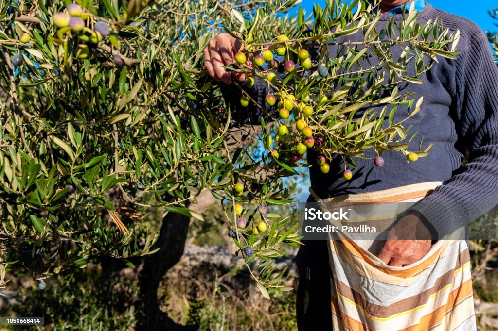
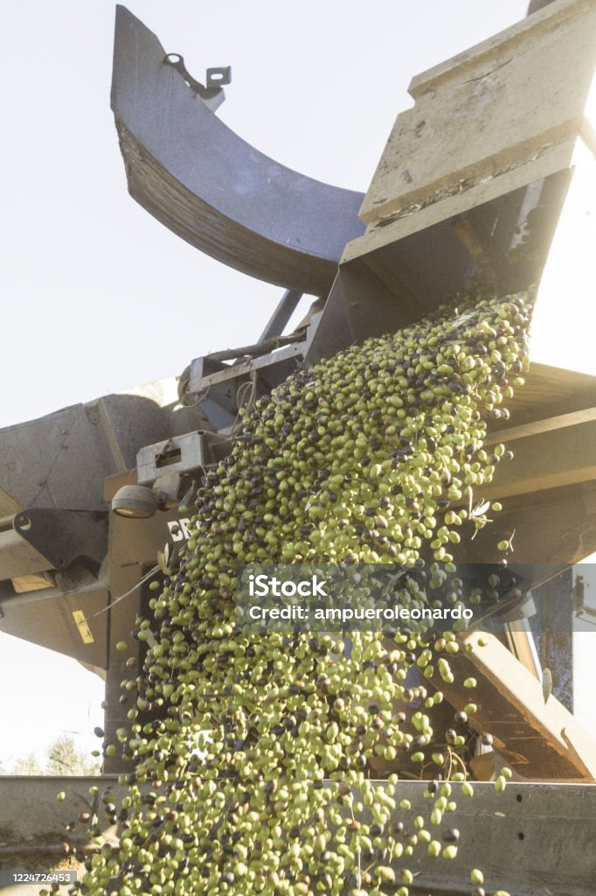

Proceso de Elaboración Tradicional
El proceso de elaboración tradicional del aceite de oliva es un arte milenario que ha sido perfeccionado a lo largo de
los siglos. Todo comienza con la recolección de las aceitunas, que se realiza a mano o con la ayuda de varas para no
dañar los frutos. Una vez recolectadas, las aceitunas se llevan al molino, donde se lavan para eliminar impurezas.
El siguiente paso es la molienda, en la que las aceitunas se trituran para obtener una pasta. Esta pasta se somete a un
proceso de batido lento, que permite que el aceite se separe del agua y los sólidos. Tradicionalmente, esta pasta se
extendía sobre capachos, que son discos de fibra vegetal, y se apilaban en una prensa hidráulica.
La presión aplicada extrae el aceite, que se recoge en recipientes. Finalmente, el aceite se decanta para separar las
impurezas restantes y se almacena en condiciones óptimas para preservar su calidad. Este método artesanal garantiza un
aceite de oliva virgen extra de alta calidad, con un sabor y aroma únicos.

Proceso de Elaboración Industrial
El proceso de elaboración industrial del aceite de oliva está diseñado para maximizar la eficiencia y la calidad del
producto final. A diferencia del método tradicional, este proceso utiliza tecnología avanzada para optimizar cada etapa
de la producción.
Todo comienza con la recolección mecanizada de las aceitunas, que permite una cosecha rápida y eficiente. Las aceitunas
se transportan inmediatamente a la almazara, donde se lavan y se eliminan las impurezas. Luego, se trituran en molinos
de martillos o discos para obtener una pasta homogénea.
La pasta de aceitunas se somete a un proceso de batido en batidoras horizontales, donde se mantiene a una temperatura
controlada para facilitar la separación del aceite. Este proceso, conocido como malaxación, dura entre 20 y 40 minutos.
Posteriormente, la pasta se centrifuga para separar el aceite del agua y los sólidos.
El aceite extraído se filtra para eliminar cualquier residuo y se almacena en tanques de acero inoxidable bajo
condiciones controladas de temperatura y luz para preservar su calidad. Este método industrial permite producir grandes
volúmenes de aceite de oliva virgen extra con un alto nivel de consistencia y pureza, asegurando que el producto final
mantenga sus propiedades organolépticas y nutricionales.

Proceso de Elaboración en Frío
El proceso de elaboración de aceite de oliva mediante prensado en frío es una técnica que preserva al máximo las
propiedades organolépticas y nutricionales del aceite. Este método comienza con la recolección de las aceitunas en su
punto óptimo de maduración. Las aceitunas se lavan y se trituran para obtener una pasta homogénea.
La pasta de aceitunas se somete a un proceso de batido lento, conocido como malaxación, a temperaturas que no superan
los 27°C. Este control de temperatura es crucial, ya que evita la degradación de los compuestos beneficiosos del aceite,
como los polifenoles y los ácidos grasos monoinsaturados. La malaxación permite que las pequeñas gotas de aceite se unan
para formar gotas más grandes, facilitando su extracción.
Posteriormente, la pasta se prensa utilizando prensas hidráulicas o centrífugas, que separan el aceite del agua y los
sólidos. El aceite extraído se filtra para eliminar cualquier impureza y se almacena en condiciones óptimas para
preservar su calidad. El resultado es un aceite de oliva virgen extra de alta calidad, con un sabor y aroma intensos,
ideal para consumir en crudo y en preparaciones culinarias que requieran un aceite de alta calidad.